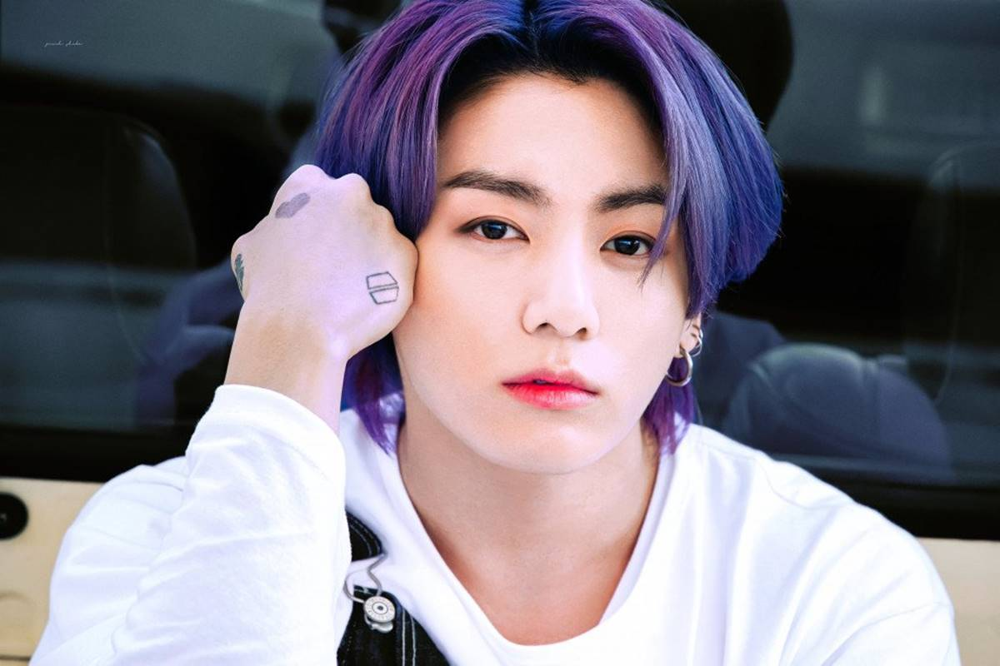

BTS

| Home | 1° geração | 2° geração | 3° geração | 4° geração | Extra:BTS |
|---|
BTS é um grupo sul-coreano com 7 integrantes que faz sucesso no mundo todo. BTS significa 'Bangtan Sonyeondan', ou ainda 'Bangtan Boys', que traduzindo é Garotos a prova de bala. Eles debutaram na ano de 2013 com a música No More Dream e diferente de muitos grupos, vieram de uma empresa pequena e ao longo dos anos tiveram sua ascensão, se tornando hoje o principal no meio da música ocidental.
Como dito anteriormente o BTS tem 7 membros, segue abaixo cada um deles:
Seu nome artístico é RM, ele tem 27 anos, é o líder e rapper principal do grupo. A maior lição que nos deu foi Love Yourself(Ame a si mesmo). Seu solo mais famoso é Persona.
Seu nome artístico é Jin, ele é o mebro mais velho do grupo com 29 anos e é vocalista guia e visual do grupo. Ele se considera Worlwide Handsome que significa mundialmente bonito. Sua música solo mais famosa é Epiphany.
Seu nome artístico é Suga e também Agust D, ele tem 29 anos e é o rapper líder do grupo. O que mais gosta de fazer é dormir. Sua música solo mais famosa é Daechwita.
Seu nome artístico é J-Hope, ele tem 27 anos e é o rapper guia e dançarino principal do grupo. É uma pessoa extremamente sorridente e consegue deixar o seu dia 100% melhor. Sua música solo mais famosa é
Seu nome artísco é o mesmo original, tem 26 anos e é o vocalista líder do grupo. É uma pessoa muito fofa, mas ao mesmo tempo se cobra demais. Sua música solo mais famosa é Serendipity.
Seu nome artístico é V, ele tem 26 anos e também é vocalista líder do grupo. Já foi eleito homem mais bonita do mundo. Sua música mais famosa foi Singularity.

Ele usa seu nome original, mas os fãs costumam chamá-lo de JK, é o vocalista principal. Basicamente é bom em tudo o que faz. Sua música solo mais famosa é Euphoria.
Os Armys(fãs do BTS), são especialistas em dar views em MV's. A cada música que os garotos lançam, conseguem quebrar o número de visualizações em um dia do Youtube. Recentemente, quando Butter foi lançada foram cerca de 108 milhões de visualizações em um único dia. Confira a baixo os dez MV's mais famosos do Bangtan:

© Copyright Evy_Kelin